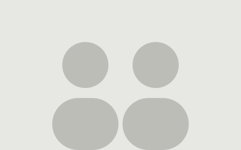

One letter a month about building for the web.
Written by two people who would rather show you a working example than tell you about a framework. No tracking, no sponsors, unsubscribe whenever you like.
The latest issue Who writes it

Show past issues